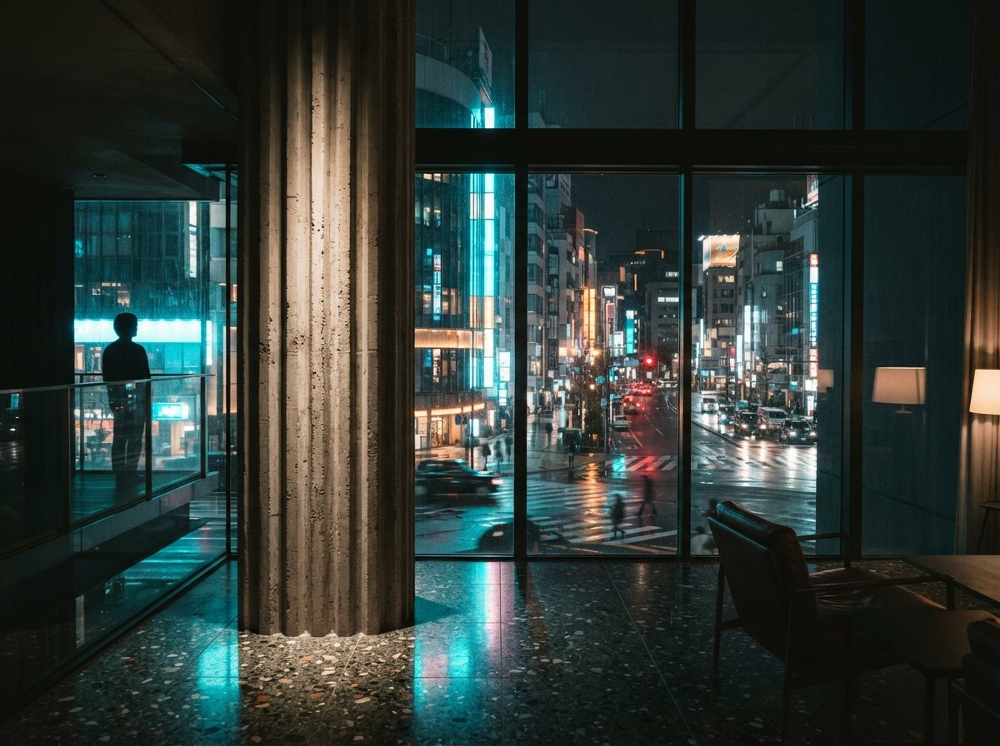

Chaos Veras and Rendair AI are often mentioned in the same breath because both sell AI image generation to architects. Read their own documentation, though, and they start from different places. Chaos positions Veras as a plugin that works inside the modelling software a practice already uses. Rendair positions itself as a browser-based workspace that renders from images you upload. That difference in input shapes most of what follows: how much control you have over geometry, how each is priced, and which kind of practice each is aimed at.
This comparison is built from the vendors' product pages, pricing pages, help articles and release notes, plus one directory listing and one comparison article written by Chaos. ArchiGen has not run either tool, so nothing below is a judgement of image quality. Where a vendor makes a claim we could not check, we say so.
Chaos Veras
An AI visualisation plugin from Chaos, the company behind V-Ray, Corona and Enscape. Chaos lists Veras as available in Revit, SketchUp, Rhino, Archicad, Vectorworks, Forma and Allplan, as working with Enscape, V-Ray and Corona, and as a standalone web app.
Inputs and platform
Chaos says Veras runs as a native add-in inside Revit, SketchUp, Rhino, Vectorworks and Archicad and reads your active 3D view, meaning its geometry, camera and materials, rather than working from an exported image. Its Revit and SketchUp workflow guide adds that Veras reads the active view, "not the entire BIM model file", and that it needs a perspective view rather than a plan or section. The same guide lists compatibility with Revit 2022 to 2026 and SketchUp 2021 to 2026. The Veras 4.7 release notes add support for Revit 2027. For the other hosts we did not find version lists in the sources we opened, so check the current download page before you buy.
Veras is not limited to model views. Chaos's product page also describes sketch-to-image, image-to-video, and an image-to-3D workflow that turns "any sketch, floor plan, image" into an editable 3D scene "ready for Revit, Rhino, or SketchUp". Chaos's introductory article says the web app offers "the same functions and tools" as the plugin and needs no CAD or BIM software. Processing happens in the cloud, and Chaos says an internet connection is required for both the plugin and the web app.
Geometry control
The way Veras controls geometry has changed between versions. According to Chaos's workflow guide, with render engine Version 7 you control how closely the output follows your model through the prompt, for example "strictly preserve massing", while Version 6 and earlier use a Geometry Override slider. The release notes for Veras 4.4 and 4.5 describe a Smart Selection feature with two modes. Modify keeps the underlying geometry while changing materials or finishes. Replace generates something new for the selected area.
On its product page Chaos also claims that with Nano Banana's prompt control "only specified geometry and materials change, keeping your massing intact". That claim comes from the vendor and we have not verified it. Notably, Chaos's own introductory article says that for final renders needing "precise geometry and photorealistic accuracy" you may get better results by switching to V-Ray, Corona or Enscape. That fits how Chaos describes Veras: as a tool for the concept and schematic stages.
Pricing and licensing
The Veras product page lists three plans as named, single-user licences. With annual billing shown, Starter is $16.90 a month (billed annually at $202.80) with 500 credits, and Pro is $29.00 a month (billed annually at $348) with 2,000 credits. Ultra includes 6,000 credits, but no price was shown in the selection we viewed. Images and videos draw on the same monthly credit pool. Chaos calls the credit system "an introductory offer" that it can adjust at its discretion, and its terms say that using AI credits voids the 14-day money-back guarantee. The free trial runs for 14 days and includes 100 Chaos credits.
Third-party figures do not all match. A Chaos blog comparison quotes "Veras Ultra ($199/month)", which does not appear on the product page we viewed. Treat the checkout page as the authority.
On scale, Chaos's product page claims "100k+" downloads and "30M+" renders. These are Chaos's own figures and have not been independently checked.

Rendair AI
Rendair is a standalone, browser-based tool. Its help centre says it is "entirely web-based", needs no installation, and has no offline mode. Its tools include chat-driven rendering, create, edit, upscale and image-to-video.
Inputs and platform
Rendair's main input is an image. Its SketchUp page tells users to export a view as a JPG or PNG, or take a screenshot, and upload it. Its Rhino page describes screenshotting a shaded view in the same way. The help centre lists accepted uploads as JPG, PNG, WEBP, TIFF, HEIC, AVIF and single-page PDF. It says the primary workflow uses 2D images of 3D models, and that some tools accept OBJ, FBX or STL (one article also lists IFC) for inserting objects.
There is an inconsistency here. Rendair's "3D Model to Render" page tells users to "import your 3D model file from SketchUp, Revit, Rhino, Blender, or other 3D software", while its help articles describe screenshots as the main route. We could not confirm which file types that tool accepts directly. Chaos's comparison article states that Rendair has "no direct plugin for any host application". That is a competitor's description, but it matches Rendair's own instructions to export and upload.
Processing runs on Rendair's servers, so it does not need a local GPU. According to the help centre, default outputs are about 1MP or 2K, depending on the model, and the upscale tools go up to 8K.
Geometry control
Rendair says it treats an uploaded base image "as the ground truth for geometry". In its description, the AI applies materials, lighting and atmosphere to the forms you provide and keeps the aspect ratio and perspective of the upload. You can also pair a model view with a separate reference image that sets style and lighting. Rendair is fairly candid about the limits. Its own help article says the tool "sees pixels, not measurements". It says Rendair is "a generative tool, not a BIM engine", that dense line work such as railings may be misread, and that a very low-detail model "might hallucinate details". For "100% geometric accuracy", Rendair points users to its separate, human-led 3D rendering service. We have not tested any of these claims.
Pricing and licensing
Rendair's pricing page lists, per month:
- Starter Plan, $19. 500 credits. Chat support and no private mode.
- Pro Plan, $49. 1,500 credits. Skip the queue, private mode, commercial licence, and one personal training session a month.
- Studio Pro Plan, $190. 7,500 credits, plus four additional team members, private mode, commercial licence, and two personal training sessions a month.
Paying yearly gives "2 Months for Free", and unused credits do not expire while the subscription is active. Rendair's plans help article (last updated 16 February 2026) adds that cancelling loses accumulated credits, that a plan can be paused for up to 3 months, and that refunds are "generally not provided". It also says images made on lower-tier plans "may be selected for public display", which matters for confidential client work. New users get 20 free credits.
Rendair's own documents do not fully agree with each other. The help article names the tiers Student, AI Creator, Pro and Team Pro, while the pricing page shows Starter, Pro and Studio Pro. The help article says all paid images are "cleared for commercial use", while the pricing page lists a commercial licence only on Pro and Studio Pro. A vendor-supplied listing on aec+tech gives yet another set of plans: Creator $20/mo, Pro $50/mo and TeamPro $200/mo. Chaos's comparison quotes a student tier at about $7.60/mo. Before you commit, confirm which plan includes commercial rights at checkout, in writing.
Rendair's homepage says it is "Used by 500,000+ architects worldwide", while the same page invites visitors to "Join 300,000+ satisfied creators". Neither figure is independently verified.
Side by side, as documented
| Question | Chaos Veras | Rendair AI |
|---|---|---|
| Primary input | Active 3D view inside the host app; uploads via web app | Uploaded images (screenshots, sketches, drawings) |
| Host integration | Listed as available in Revit, SketchUp, Rhino, Archicad, Vectorworks, Forma, Allplan | None documented; export and upload |
| Platform | Plugin plus web app; cloud processing, internet required | Browser only; cloud processing, no offline mode |
| Geometry control | Prompt-based (engine V7) or Geometry Override slider (V6 and earlier); Modify/Replace selection | Base image as structure; optional style reference; brush edits |
| Lowest listed paid plan | $16.90/mo billed annually, 500 credits | $19/mo, 500 credits |
| Team features | Named licences on the plans shown | Studio Pro includes four additional team members |
| Vendor's own caveat | Consider V-Ray, Corona or Enscape for final renders needing precise geometry | "Not a BIM engine"; use its manual service for exact accuracy |
Which kind of practice each suits
What follows is editorial reasoning from the documentation above, not a test result.
Veras is aimed at practices that model in a supported BIM or CAD host and want to stay there. If your design moves daily in Revit, SketchUp, Rhino, Archicad or Vectorworks, a plugin that uses the current active view as input removes the export step. That is the main structural difference Chaos is selling. The trade-off is that you depend on Chaos's host and version support, and on a credit system Chaos says it may adjust.
Rendair is aimed at people who would rather not install anything, or who start from images rather than models. Sketches, site photos, drawings and screenshots from software Veras does not support can all go in, and a browser is all you need. The trade-off is the one Rendair describes itself: the AI sees pixels, so every design change means a new screenshot and upload, and geometry is only as reliable as the image you give it. Firms with confidential work should look closely at the plan tiers, given the public-display and commercial-licence wording above.
Neither vendor claims its AI output replaces a conventional render for construction-stage accuracy. Both point to traditional rendering, or a human service, for that. If your main need is interiors, it is worth reading our piece on AI rendering tools for interior designers alongside this one. The fairest test of either tool is the free trial on one of your own views, judged against your own standard.
No affiliate relationships or sponsored placements.
Sources
- Veras: AI creative partner for architects & designers, Chaos. Accessed 30 September 2026.
- AI rendering without leaving Revit or SketchUp: a 2026 workflow guide, Chaos blog. Accessed 30 September 2026.
- What is Veras? An introduction to the AI visualization tool, Chaos blog. Accessed 30 September 2026.
- What's new in Veras (Veras 4.4 and 4.5), Chaos blog. Accessed 30 September 2026.
- Veras 4.7 is now available: Edit videos with Gemini Omni, Chaos blog. Accessed 30 September 2026.
- AI Architectural Rendering Tools in 2026: 6 Options Compared, Chaos blog (written by the maker of Veras). Accessed 30 September 2026.
- Rendair AI homepage, Rendair. Accessed 30 September 2026.
- Rendair AI pricing, Rendair. Accessed 30 September 2026.
- Understanding Rendair AI Plans and Pricing Tiers, Rendair help centre. Accessed 30 September 2026.
- Is Rendair AI a web app or do I need to install software?, Rendair help centre. Accessed 30 September 2026.
- How Rendair AI handles scale and proportions, Rendair help centre. Accessed 30 September 2026.
- How Rendair AI Fits into a Traditional Visualization Pipeline, Rendair help centre. Accessed 30 September 2026.
- How is Rendair AI different from traditional rendering software?, Rendair help centre. Accessed 30 September 2026.
- Can I combine a 3D model with a reference image?, Rendair help centre. Accessed 30 September 2026.
- AI Rendering for SketchUp, Rendair. Accessed 30 September 2026.
- AI Rendering for Rhino 3D, Rendair. Accessed 30 September 2026.
- 3D Model to Render with AI, Rendair. Accessed 30 September 2026.
- RENDAIR AI pricing, case studies, alternatives & more, aec+tech (directory listing with vendor-supplied text). Accessed 30 September 2026.
Rewritten 30 September 2026. An earlier version of this article reported a client-project comparison and scores that ArchiGen did not carry out. This version is based on the public sources listed above.